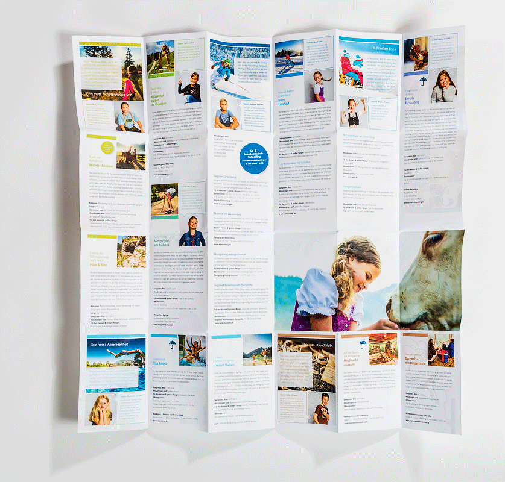

L
ading...
3D
bubu
WIRE-O-BINDUNG
-Bei der Wire-O-Bindung wird ein Drahtkamm auf der ganzen Bindelänge durch die einzelnen Löcher gesteckt und danach zusammengedrückt. Diese Bindeart wird häufig für Spiralblöcke verwendet.
bubu
SPIRALBINDUNG
-Die Spiralbindung hat Ähnlichkeit zu der Wire-O-Bindung, hier wird ebenfalls ein Draht von vorn nach hinten durch die Löcher gedreht und verschlossen. Sie wird häufig für Spiralblöcke verwendet.
fw-medien
RÜCKENDRAHTHEFTUNG
-Hier wird die zusammengetragenen Blattlagen entlang der Falzlinie mit Zwei Klammern geheftet und anschließend gefalzt.
bubu

PUR-KLEBEBINDUNG
-Als Verfahren zur Klebebindung von Büchern und Broschuren verwendet das PUR-Verfahren Polyurethan als Klebstoff. Er wird heiß verarbeitet und verfestigt sich beim Erkalten. Anschließend ist die Bindung unempfindlich gegenüber Erwärmung.
bubu
FLATBOOK
-Flatbooks sind hochwertige Fotoalben, gefertigt in traditioneller Buchbindekunst, Made in Germany. Das Besondere: Die Seiten liegen immer Plan auf. Das wird ermöglicht durch die einzigartige Verarbeitung mit einem speziellen Foliengelenk.
fw-medien
HARDCOVER
-Ein Hardcover (Abkürzung: HC; auch Pappband, Festeinband oder selten Deckenband) ist ein Buch mit einem festen Einband, dessen Kern aus Pappe meist vollständig von Bezugsmaterialien wie Papier, Textilem oder Leder umgeben ist.
druck-deine-diplomarbeit
SOFTCOVER
-Softcover, oder Broschur, heißen Bücher, die einen flexiblen Karton als Einband besitzen. Der Einband wird meist sowohl mit dem Titel als auch mit einem farbigen Bild bedruckt. Dabei kann der Einband beidseitig bedruckt werden.
fw-medien

SCHWEIZER BROSCHUR
-Bei der Schweizer Broschur ist der Buchblock am Rücken mit einem Gewebestreifen eingefasst. Der äußere Kartonumschlag klebt nicht am Rücken des Buchblockes, sondern mit einem schmalen Streifen an der letzten Seite Dies verbessert das Aufschlagverhalten der Broschur erheblich.
metapaper
JAPANBINDUNG
-Eine Bindetechnik aus Fernost, bei der der Papierbogen nur von einer Seite bedruckt und dann mit der unbedruckten Seite nach innen gefaltet wird. Von außen wird der Buchblock meist sichtbar mit Fäden zusammengebunden und "genäht".
bubu
BUCHSCHRAUBEN
-Buchschrauben sind eine Möglichkeit zur repräsentativen Heftung von Büchern, Broschüren oder Loseblattwerken, dem sogenannten Schraubband.
onlineprinters
BLOCKLEIMUNG
-Bei der Blockleimung wird lediglich der Rücken mit Leim bestrichen. Zuvor werden die zu leimenden Blätter beschnitten.
fw-medien
STEPPSTICHHEFTUNG
-Mittels Singerstich werden mehrere Lagen Papier zusammengenäht.
rapp-druck
FADENHEFTUNG
-Als Fadenheftung bezeichnet man die Verarbeitung von Büchern mit einem Faden anstatt einer Klebebindung. Bei der industriellen Buchherstellung ist die Fadenheftung die hochwertigste und auch die teuerste Bindeart.
fw-medien
OFFENE FADENHEFTUNG
-Gerade die offenen Fadenheftungen kommen bei Büchern besonderer Art, wie beispielsweise Kunstbücher oder Lexika zur Geltung. Sie ist im Gegensatz zur normalen Fadenheftung nicht noch von einem Mantel umgeben.
fw-medien
HALBOFFEN FADENHEFTUNG
-Eine Mischung aus der normalen und offenen Fadenheftung.
3D
grafikatur
WICKELFALZ
-Der Wickelfalz ist ein Parallelfalz. Zwei oder mehrere gleich breite Teile des Falzbogens werden um ein Bogenteil gefalzt.
3D
flyeralarm
LEPORELLOFALZ
-Der Leporello, auch Faltbuch genannt, ist ein faltbares Heft in Form eines langen Papier- oder Kartonstreifens, der ziehharmonikaartig zusammengelegt ist. Es wird vor allem für Foto- und Bilderserien verwendet.
primus-print
MITTELPARALLELFALZ
-Bei diesem Falz wird der Papierbogen in der Mitte immer in der gleichen Richtung gefalzt. Dies kann im Quer- oder Hochformat geschehen.
viaprinto
KREUZFALZ
-Der Kreuzfalz bildet das Gegenstück zum Parallelfalz. Bei einem Kreuzfalz werden die Druckbögen mindestens zweimal im rechten Winkel zueinander gefalzt. Dadurch entstehen Druckprodukte von acht oder mehr Seiten.
diedruckdienstleister
FENSTERFALZ
-Der Fensterfalz ist eine Entwicklung, die bereits seit Jahrhunderten zu einer höheren Energieeffizienz beiträgt. Er beschreibt eine Abwinklung am Ende des Flügels und des Blendrahmens im Fenster.
copyclara
RILLEN
-Rillen bezeichnet einen Arbeitsvorgang, bei dem in ein papier- oder kartonhaltiges Material Kerben (Rillungen) mechanisch engerbacht werden, wodurch sich das Material an dieser Stelle definierter und mit geringerem Kraftaufwand falten lässt.
torso
ÖSEN
-Ösen sind kleine Löcher, wodurch man zum Beispiel einen Farbfächer mit machen kann. Manchmal steckt man noch ein Metallstück durch das Loch.
copyclara
PLANFALTUNG
-Bei dieser Faltung bleibt an der linken Seite, des DINA4 gefalteten Plans, ein Rand von 20mm stehen. Hier könnte man die Pläne noch nachträglich lochen.
wuensch-papierverarbeitung
LANDKARTENFALZ
-Beim Landkartenfalz-Flyer kommt eine Kombination aus senkrechter und waagerechter Zickzack-Falzung zum Einsatz. Da es sich um eine der spezielleren Falzart handelt, ist die Auswahl an Formaten und Papierarten eingeschränkt.
3D
metapaper
HEISSFOLIEN-PRÄGUNG
-Heißfolienprägung ist die drucktechnisch dekorative Aufwertung einer Drucksache mittels Folien, deren Beschichtung (z.B. Metallic-Farben) durch Druck und Hitze herausgelöst und auf das Papier bzw. den Karton gepresst wird.
3D
rapp-druck
BLINDPRÄGUNG
-Blindprägung ist eine Prägung, bei der keine Farbe im Spiel ist. Bei der Hochprägung ist das Motiv erhoben, bei der Tiefprägung quasi vertieft in das Material geprägt.
saxoprint
UV-LACKIERUNG
-Im Gegensatz zu Öl- und Dispersionslack ist UV-Lack nicht mit flüchtigen Bestandteilen wie Wasser oder Lösungsmittel versehen.
copyclara

PERFORIEREN
-Die Perforation ist das Durchlochen von Hohlkörpern oder flachen Gegenständen. Regelmäßige Anordnung, Menge, Form und Größe der Löcher spiele besonders in der Technik eine Rolle.
rapp-druck
STEPPSTICHNAHT
-Dieser Stich ist ähnlich wie der Vorstich nur gibt es immer noch einen Zwischenschritt. Dieser Stich sieht daher nicht aus wie ein gestrichelte Linie, sondern wie ein durchgezogener Strich.
rapp-druck
CELLOPHANIERUNG
-Durch Cellophanierung werden Drucksachen besonders veredelt. Die Oberfläche der Drucksachen wird dabei mit einer hauchdünnen Folie beschichtet.
3D
rapp-druck
DRIP-OFF
-Durch die spezielle Zusammensetzung der sogenannten Drip-Off-Lacke stoßen sich der Glanzlack und der Mattlack ab. Bei diesem Prozess des Abstoßen bilden sich kleinste Lacktröpfchen. Die ausgesparten Stellen sind anschließend mit einem Hochglänzenden Lackfilm bedeckt.
rapp-druck
METALLIC-KARTON
-Der Metallic-Karton hat ein edles Schimmern welches besonders bei Lichtfall auffällt.
rapp-druck

LASERSTANZEN
-Laserschneiden, auch Laserstrahlschneiden, bezeichnet das Durchtrennen von Festkörpern mittels kontinuierlicher oder gepulster Laserstrahlung.
metapaper
RELIEFDRUCK
-Der Reliefdruck entsteht, indem unmittelbar nach dem Druckvorgang auf die noch feuchte Oberfläche ein Kunststoffgranulat aufgetragen wird. Das Granulat haftet ausschließlich auf der Farbe und verschmilzt mit ihr unter Hitzeeinfluss zu einer transparenten Beschichtung.
rapp-druck
LETTERPRESS
-Letterpress-Produkte werden mit Farbe gedruckt und gleichzeitig wird das Druckbild (z. B. Text oder grafische Elemente) tiefgeprägt – so entsteht der charakteristische Letterpress-Look.
rapp-druck
KASCHIEREN
-Das Kaschieren durch Kunststofffolien ist eine der häufigsten Formen der Veredelung. Diese Aufwertung von Papier und Pappe führt zu positiven Effekten: Das Material ist vor äußeren Einflüssen wie Feuchtigkeit und Schmutz besser geschützt und erzielt optische Effkete. Das Material wird deutlich stabiler und wellt nicht so schnell.
3D
rapp-druck
STANZEN
-Stanzen ist ein Trennverfahren zur Fertigung von Flachteilen aus verschiedenen Werkstoffen (Bleche, Pappe, Textilien usw.) mit einer Stanzpresse oder durch Schlag mit einem Hammerkopf auf ein Schneidwerkzeug.
rapp-druck
REGISTERSTANZEN
-Ein Register wertet ein Druckwerk auf, indem durch das Ausstanzen von Papier Informationen am Katalog sichtbar werden, die eine schnelle Navigation ermöglichen.
rapp-druck
KONFEKTIONIEREN
-Text
metapaper
EMBOSSED
-Mit Embossing machst Du einen festen, leicht erhöhten Stempelabdruck. Das feine Reliefpulver wird auf das Motiv gestreut, mit Hitze geschmolzen und verbindet sich so fest mit dem Papier.
vogt-druck
FLASHCOLOR
-Bilder und Informationen werden erst auf dem Smartphone, durch fotografieren mit Blitzlicht sichtbar.
vogt-druck
HYDROCOLOR
-Durch leichtes Anfeuchten der Hydrocolor werden dahinter liegende Motive sichtbar.
vogt-druck
TOUCHCOLOR
-Durch touchcolor kann sich die Farbe zum Beispiel wie Wolle oder andere Materialien anfühlen.
vogt-druck
SAND-EFFEKT
-Sand-Effekt ist eine Kollektion, die aus vier mehrfarbigen Mischungen besteht wo dem Lack noch echte Quarzsand untergemischt wird, aus denen man einzigartige Sandstylings erstellen kann, welche beim drüberstreichen ein prickelndes Gefühl auslösen.
rapp-druck
LOGO GENÄHT
-Mit dem Steppstich-Vefahren können auch Motive jeglicher Art genäht werden. Ideal dafür eignet sich baumwollhaltiges Papier, welches sich mit seinen weichen Fasern besonders gut nähen läßt. Damit auf der Rückseite des Papiers die Einstichstellen nicht zu sehen sind, wird diese Seite in der Regel mit dem gleichen Papier kaschiert.
copyclara

LAMINIEREN
-Die Lamination bezeichnet einerseits ein stoffschlüssiges, thermisches Fügeverfahren ohne Hilfsmaterialien.
copyclara
SCHNEIDEN
-Das Schneiden ist die Bewegung, die Teile vom Werk trennt, was im Allgemeinen durch ein Schneidwerkzeug erreicht wird, das sich auf einer Geraden bewegt.
rapp-druck
SCHACHTEL-PRODUKTION
-Faltschachteln sind industriell vorgefertigte Schachteln, die platzsparend in zusammengelegtem Zustand vom Hersteller an die verarbeitenden Unternehmen geliefert werden, um dort mit einfachen Handgriffen oder maschinell zur Schachtel aufgefaltet zu werden.